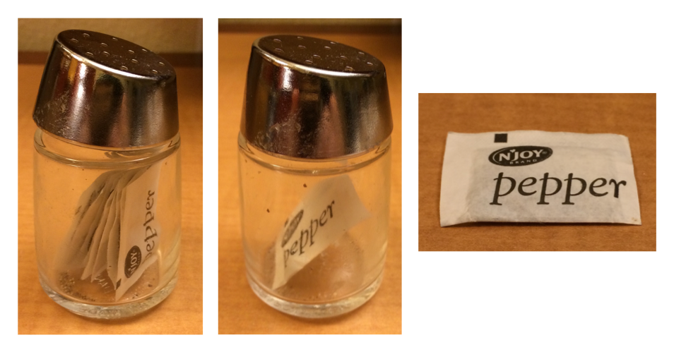
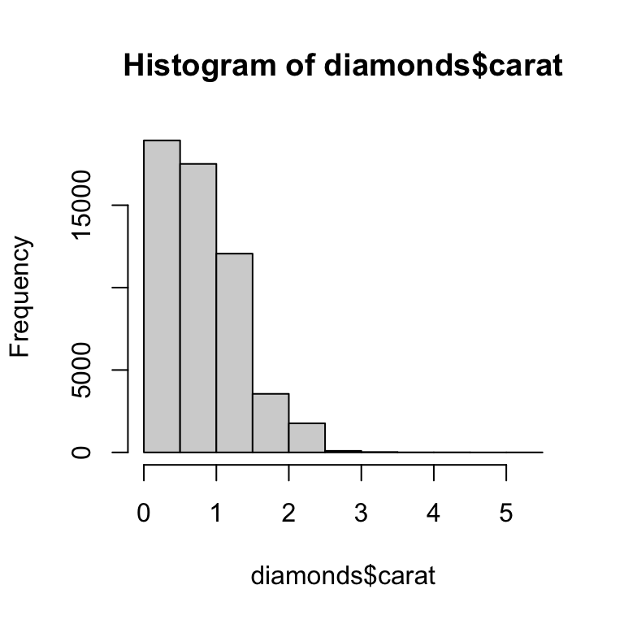
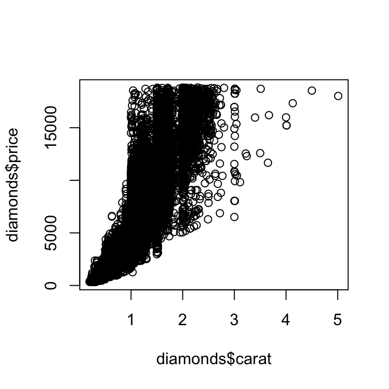

library(tidyverse)27 R基础实用指南
27.1 引言
在编程部分的结尾，我们将快速介绍一些最重要的基础R函数，这些函数在本书中并没有讨论。这 些工具在你进行更多编程时会特别有用，并且会帮助你阅读在实际项目中遇到的代码。
这是一个很好的时机来提醒你，tidyverse并不是解决数据科学问题的唯一方法。我 们在本书中教授tidyverse是因为tidyverse包共享一种共同的设计理念，增加了函数之间的一致性，并使每个新函数或包更容易学习和使用。不 使用基础R就无法使用tidyverse，因此实际上我们已经向你介绍了许多基础R函数：从library()来加载包，到sum()和mean()用于数值汇总，到factor、date和POSIXct数据类型，当然还有所有基本运算符如+、-、/、*、|、&和！。到 目前为止，我们还没有重点关注基础R工作流程，因此本章我们将重点介绍其中的一些。
读完这本书后，你将学习使用基础R、data.table和其他包来解决相同问题的其他方法。当 你开始阅读其他人编写的R代码时，特别是如果你在使用StackOverflow时，你无疑会遇到这些其他方法。编 写使用多种方法的代码是完全可以的，不要让任何人告诉你不是这样！
在本章中，我们将重点关注四个大主题：使用[进行子集选择，使用[[和$进行子集选择，apply函数族和for循环。最 后，我们将简要讨论两个基本的绘图函数。
27.1.1 必要条件
这个包专注于R的基础功能，因此没有真正的必要条件，但为了解释一些差异，我们将加载tidyverse包。
27.2 利用 [ 选择多个元素
[用于从向量和数据框中提取子组件，其调用方式如x[i]或x[i, j]。在 本节中，我们将向您介绍[的强大功能，首先展示如何在向量中使用它，然后展示相同的原理如何直接扩展到二维（2d）结构，如数据框。之 后，我们将通过展示dplyr中的各种函数是如何作为[的特殊情况的例子来帮助你巩固这些知识。
27.2.1 向量子集选择
有五种主要的方式可以用来对向量进行子集选择，即可以利用作为x[i]中的i：
正整数向量。使 用正整数进行子集选择会保留这些位置上的元素：
x <- c("one", "two", "three", "four", "five") x[c(3, 2, 5)] #> [1] "three" "two" "five"通过重复某个位置，你实际上可以生成一个比输入更长的输出，这使得“子集选择”这个术语有点名不副实。
x[c(1, 1, 5, 5, 5, 2)] #> [1] "one" "one" "five" "five" "five" "two"负整数向量。 负值会删除指定位置的元素：
x[c(-1, -3, -5)] #> [1] "two" "four"逻辑向量。使 用逻辑向量进行子集选择会保留所有与
TRUE值对应的值。这 通常与比较函数一起使用时非常有用。x <- c(10, 3, NA, 5, 8, 1, NA) # All non-missing values of x x[!is.na(x)] #> [1] 10 3 5 8 1 # All even (or missing!) values of x x[x %% 2 == 0] #> [1] 10 NA 8 NA与
filter()不同，NA索引会被包含在输出中，并且以NAs的形式出现。字符向量。如 果你有一个命名的向量，你可以使用字符向量来对其进行子集选择：
x <- c(abc = 1, def = 2, xyz = 5) x[c("xyz", "def")] #> xyz def #> 5 2与使用正整数进行子集选择一样，你可以使用字符向量来重复单个条目。
不指定任何内容。最 后一种子集选择方式是什么都不指定，即
x[]，这将返回完整的x。这 对于向量的子集选择来说并不实用，但正如我们稍后会看到的，当对像 tibble 这样的二维结构进行子集选择时，它是很有用的。
27.2.2 数据框子集选择
你可以使用多种不同的方式1 对数据框使用[，但最重要的方式是使用df[rows, cols]来独立选择行和列。 这里的rows和cols是上面描述的向量。 例如，df[rows, ]和df[, cols]分别只选择行或列，通过保留其他维度的空子集来实现。
以下是一些示例:
df <- tibble(
x = 1:3,
y = c("a", "e", "f"),
z = runif(3)
)
# Select first row and second column
df[1, 2]
#> # A tibble: 1 × 1
#> y
#> <chr>
#> 1 a
# Select all rows and columns x and y
df[, c("x" , "y")]
#> # A tibble: 3 × 2
#> x y
#> <int> <chr>
#> 1 1 a
#> 2 2 e
#> 3 3 f
# Select rows where `x` is greater than 1 and all columns
df[df$x > 1, ]
#> # A tibble: 2 × 3
#> x y z
#> <int> <chr> <dbl>
#> 1 2 e 0.834
#> 2 3 f 0.601我们稍后会回到$，但你应该能够根据上下文猜出df$x的作用：它从df中提取x变量。我 们在这里需要使用它，因为[不使用整齐评估（tidy evaluation），所以需要明确指定x变量的来源。
在[的使用上，tibble 和数据框之间存在重要的区别。在 本书中我们主要使用了tibble，它们是数据框，但调整了一些行为以使你的工作更加轻松。在 大多数情况下，你可以互换使用“tibble”和“数据框”，所以当我们要特别关注 R 的内置数据框时，我们会写data.frame。如 果df是一个data.frame，那么df[, cols]会在col选择单个列时返回一个向量，在选择多个列时返回一个数据框。如 果df是一个 tibble，那么[总是会返回一个 tibble。
df1 <- data.frame(x = 1:3)
df1[, "x"]
#> [1] 1 2 3
df2 <- tibble(x = 1:3)
df2[, "x"]
#> # A tibble: 3 × 1
#> x
#> <int>
#> 1 1
#> 2 2
#> 3 3避免数据框中这种模糊性的一个方法是明确指定drop = FALSE：
df1[, "x" , drop = FALSE]
#> x
#> 1 1
#> 2 2
#> 3 327.2.3 dplyr等效函数
有几个dplyr的函数是 [ 的特例：
filter()相当于使用一个逻辑向量来选择行子集，同时确保排除缺失值：df <- tibble( x = c(2, 3, 1, 1, NA), y = letters[1:5], z = runif(5) ) df |> filter(x > 1) # same as df[!is.na(df$x) & df$x > 1, ]在实际应用中另一种常见的技巧是使用
which()函数，其有排除缺失值的附带作用：df[which(df$x > 1), ]。arrange()相当于使用整数向量来选择子集行，这个整数向量通常是通过order()函数创建的：df |> arrange(x, y) # same as df[order(df$x, df$y), ]你可以使用
order(decreasing = TRUE)来将所有列按降序排序，或者使用-rank(col)来单独按降序排序某一列。select()和relocate()都类似于使用字符向量来选择或重新排列列df |> select(x, z) # same as df[, c("x", "z")]
基础R还提供了一个函数subset()，该函数结合了filter()和select()2的功能，名为。
df |>
filter(x > 1) |>
select(y, z)
#> # A tibble: 2 × 2
#> y z
#> <chr> <dbl>
#> 1 a 0.157
#> 2 b 0.00740# same as
df |> subset(x > 1, c(y, z))这个函数是dplyr语法中许多部分的灵感来源。
27.2.4 练习
创建函数，这些函数以向量为输入，并返回:
- 偶数位置上的元素；
- 除了最后一个值以外的所有元素；
- 只有偶数 (且没有缺失值)。
为什么
x[-which(x > 0)]不等同于x[x <= 0]？阅 读which()的文档并进行一些实验来找出原因。
27.3 使用$和[[选择元素
[用于选择多个元素，它与[[和$搭配使用，后两者用于提取单个元素。在 本节中，我们将向您展示如何使用[[和$从数据框中提取列，讨论data.frames和tibble之间的一些其他差异，并强调当与列表一起使用时，[和[[之间的一些重要差异。
27.3.1 数据框
[[和$可用于从数据框中提取列。[ [可以通过位置或名称进行访问，而$专门用于通过名称进行访问：
tb <- tibble(
x = 1:4,
y = c(10, 4, 1, 21)
)
# by position
tb[[1]]
#> [1] 1 2 3 4
# by name
tb[["x"]]
#> [1] 1 2 3 4
tb$x
#> [1] 1 2 3 4它们还可以用于创建新列，与R 基础包中mutate()函数等价：
tb$z <- tb$x + tb$y
tb
#> # A tibble: 4 × 3
#> x y z
#> <int> <dbl> <dbl>
#> 1 1 10 11
#> 2 2 4 6
#> 3 3 1 4
#> 4 4 21 25除了transform()、with()和within()，还有其他几种 R 基础包中创建新列的方法。H adley 在https://gist.github.com/hadley/1986a273e384fb2d4d752c18ed71bedf上收集了一些示例。
当进行快速汇总时，直接使用$符号是很方便的。例 如，如果你只想找到最大钻石的尺寸或者cut的可能值，那么就没有必要使用summarize()函数：
max(diamonds$carat)
#> [1] 5.01
levels(diamonds$cut)
#> [1] "Fair" "Good" "Very Good" "Premium" "Ideal"dplyr也提供了一个与[[或$类似的等效函数pull()，这在@sec-data-transform 没有提到。p ull()接收一个变量名或变量位置，并仅返回该列。这 意味着我们可以使用管道操作符来重写上面的代码。
diamonds |> pull(carat) |> max()
#> [1] 5.01
diamonds |> pull(cut) |> levels()
#> [1] "Fair" "Good" "Very Good" "Premium" "Ideal"27.3.2 Tibbles
当涉及到$时，tibble和data.frame之间有几个重要区别。数 据框会匹配任何变量名的前缀（即所谓的部分匹配），并且如果某列不存在也不会报错：
There are a couple of important differences between tibbles and base data.frames when it comes to $. Data frames match the prefix of any variable names (so-called partial matching) and don’t complain if a column doesn’t exist:
df <- data.frame(x1 = 1)
df$x
#> [1] 1
df$z
#> NULLtibble 更严格：它只精确匹配变量名，如果试图访问的列不存在，它会生成一个警告：
tb <- tibble(x1 = 1)
tb$x
#> Warning: Unknown or uninitialised column: `x`.
#> NULL
tb$z
#> Warning: Unknown or uninitialised column: `z`.
#> NULL出于这个原因，我们有时开玩笑说 tibble 很“懒惰”和“易怒”：它们做的少但抱怨的多。
27.3.3 列表
[[和$对于处理列表也非常重要，了解它们与[的区别很重要。让 我们用一个名为l的列表举例说明这些区别：
l <- list(
a = 1:3,
b = "a string",
c = pi,
d = list(-1, -5)
)[用于提取子列表。无 论提取多少个元素，结果始终是一个列表。str(l[1:2]) #> List of 2 #> $ a: int [1:3] 1 2 3 #> $ b: chr "a string" str(l[1]) #> List of 1 #> $ a: int [1:3] 1 2 3 str(l[4]) #> List of 1 #> $ d:List of 2 #> ..$ : num -1 #> ..$ : num -5与向量一样，你可以使用逻辑向量、整数向量或字符向量来进行子集选择。
[[和$用于从列表中提取单个组件。它 们会从列表中移除一层层次结构。str(l[[1]]) #> int [1:3] 1 2 3 str(l[[4]]) #> List of 2 #> $ : num -1 #> $ : num -5 str(l$a) #> int [1:3] 1 2 3
[和[[之间的区别对于列表来说特别重要，因为[[会深入到列表中提取单个元素，而[则会返回一个新的、更小的列表。为 了帮助你记住这个区别，让我们看一下@fig-pepper 中展示的不寻常的胡椒瓶。如 果这个胡椒瓶代表你的列表胡椒瓶，那么pepper[1]就是一个只包含一包胡椒的胡椒瓶。p epper[2]看起来会一样，但会包含第二包胡椒。p epper[1:2]则是一个包含两包胡椒的胡椒瓶。而 pepper[[1]]则会提取出胡椒包本身。

pepper[1]. (Right) pepper[[1]]
同样的原则也适用于数据框使用一维运算符[时：df["x"]返回一个单列的数据框，而df[["x"]]返回一个向量。
27.3.4 练习
当你使用
[[运算符和一个大于向量长度的正整数时，会发生什么？当 你使用不存在的名称进行子集选择时会发生什么？pepper[[1]][1]会是什么？pepper[[1]][[1]]又是什么？
27.4 apply家族
在 章节 26, 你学习了如dplyr::across()和映射家族（map family）函数这样的tidyverse迭代技术。在 这一节中，你将学习它们的等效函数，即应用家族（apply family）函数。在 这个前提下，apply和map是同义词，因为“将函数映射到向量的每个元素”的另一种说法就是“将函数应用到向量的每个元素”。在 这里，我们将为你快速概述这个家族，以便你在实际使用中识别它们。
这个家族中最重要的成员是lapply()，它与purrr::map()3非常相似。 事实上，因为我们没有使用map()的任何高级功能，所以你可以将@sec-iteration 中的每个map()调用替换为lapply()。
在基础R中没有与across()完全等效的函数，但你可以通过使用lapply()和[来接近这个效果。这 种操作可行是因为在底层，数据框是列的列表，因此对数据框调用lapply()会将函数应用到每一列。
df <- tibble(a = 1, b = 2, c = "a", d = "b", e = 4)
# First find numeric columns
num_cols <- sapply(df, is.numeric)
num_cols
#> a b c d e
#> TRUE TRUE FALSE FALSE TRUE
# Then transform each column with lapply() then replace the original values
df[, num_cols] <- lapply(df[, num_cols, drop = FALSE], \(x) x * 2)
df
#> # A tibble: 1 × 5
#> a b c d e
#> <dbl> <dbl> <chr> <chr> <dbl>
#> 1 2 4 a b 8上面的代码使用了一个新函数sapply()。它 与lapply()类似，但它总是试图简化结果，这就是其名称中s的由来，这里它产生了一个逻辑向量而不是列表。我 们不建议在编程中使用它，因为简化可能会失败并给出意外的类型，但在交互式使用中通常没问题。p urrr包中有一个类似的函数叫做map_vec()，我们在@sec-iteration 中没有提到它。
基础R提供了一个更严格的sapply()版本，叫做vapply()，即vector apply的缩写。它 接受一个额外的参数来指定预期的类型，确保无论输入如何，简化总是以相同的方式进行。例 如，我们可以将上面的sapply()调用替换为vapply()，其中我们指定我们期望is.numeric()返回一个长度为1的逻辑向量：
vapply(df, is.numeric, logical(1))
#> a b c d e
#> TRUE TRUE FALSE FALSE TRUE当sapply()和vapply()在函数内部使用时，它们之间的区别非常重要（因为这对函数对不寻常输入的鲁棒性有很大影响），但在数据分析中通常并不重要。
apply家族中的另一个重要成员是tapply()，它用于计算单个分组汇总：
diamonds |>
group_by(cut) |>
summarize(price = mean(price))
#> # A tibble: 5 × 2
#> cut price
#> <ord> <dbl>
#> 1 Fair 4359.
#> 2 Good 3929.
#> 3 Very Good 3982.
#> 4 Premium 4584.
#> 5 Ideal 3458.
tapply(diamonds$price, diamonds$cut, mean)
#> Fair Good Very Good Premium Ideal
#> 4358.758 3928.864 3981.760 4584.258 3457.542不幸的是，tapply()将其结果返回为一个命名向量，如果你想要将多个汇总和分组变量收集到一个数据框中，这需要进行一些处理（当然，不这样做只使用独立的向量进行操作也是可能的，但根据我们的经验，这只会延误工作）。如 果你想知道如何使用tapply()或其他基础技巧来执行其他分组汇总，Hadley 在 in a gist中收集了一些技巧。
应用家族的最后一个成员是标题中的apply()，它用于矩阵和数组。特 别要注意apply(df, 2, something)，这是使用lapply(df, something)的一种缓慢且可能危险的方式。这 在数据科学中很少出现，因为我们通常使用数据框而不是矩阵。
27.5 for 循环
for循环是迭代的基本模块。无 论是apply家族还是map家族，在内部都是基于for循环来实现的。f or循环是强大且通用的工具，对于想要成为更有经验的R程序员来说，学习它们是非常重要的。一 个for循环的基本结构如下所示：
for (element in vector) {
# do something with element
}for循环最直接的用途是实现与walk()相同的效果：对列表中的每个元素调用某个带有副作用的函数。例 如在@sec-save-database 中不使用walk()函数：
paths |> walk(append_file)我们可以使用 for 循环:
for (path in paths) {
append_file(path)
}如果你想保存for循环的输出，事情会变得稍微复杂一些，比如像我们在@sec-iteration 所做的那样，读取一个目录中所有的Excel文件：
paths <- dir("data/gapminder", pattern = "\\.xlsx$", full.names = TRUE)
files <- map(paths, readxl::read_excel)你可以使用几种不同的技巧，但我们建议一开始就明确输出将是什么样的。在 这种情况下，我们想要一个与路径列表长度相同的列表，我们可以使用vector()函数来创建它。
files <- vector("list", length(paths))然后，我们将不再直接迭代paths的元素，而是迭代它们的索引，使用seq_along()函数为每个paths的元素生成一个索引：
seq_along(paths)
#> [1] 1 2 3 4 5 6 7 8 9 10 11 12 13 14 15 16使用索引很重要，因为它允许我们将输入中的每个位置与输出中的相应位置链接起来:
for (i in seq_along(paths)) {
files[[i]] <- readxl::read_excel(paths[[i]])
}要将多个tibble列表合并成一个单一的tibble，你可以使用do.call()+rbind()函数：
do.call(rbind, files)
#> # A tibble: 2,272 × 5
#> country continent lifeExp pop gdpPercap
#> <chr> <chr> <dbl> <dbl> <dbl>
#> 1 Afghanistan Asia 28.8 8425333 779.
#> 2 Albania Europe 55.2 1282697 1601.
#> 3 Algeria Africa 43.1 9279525 2449.
#> 4 Angola Africa 30.0 4232095 3521.
#> 5 Argentina Americas 62.5 17876956 5911.
#> 6 Australia Oceania 69.1 8691212 10040.
#> # ℹ 2,266 more rows与其在遍历过程中创建一个列表并保存结果，一个更简单的方法是逐步构建数据框：
out <- NULL
for (path in paths) {
out <- rbind(out, readxl::read_excel(path))
}我们推荐避免这种模式，因为当向量很长时它可能会变得非常慢，这就是for循环很慢这种误解持续存在的来源。实 际上for循环本身并不慢，但迭代地增长向量却很慢。
27.6 绘图
许多不使用tidyverse的R用户更喜欢使用ggplot2进行绘图，因为它有一些有用的特性，如合理的默认值、自动图例和现代外观。然 而，基础R绘图函数仍然很有用，因为它们非常简洁，只需输入很少的代码就可以进行基本的探索性绘图。
你在实际使用中会遇到两种主要的基础绘图类型：散点图和直方图，它们分别使用plot()和hist()函数生成。下 面是一个来自diamonds数据集的快速示例：
# Left
hist(diamonds$carat)
# Right
plot(diamonds$carat, diamonds$price)

注意，基本绘图函数与向量一起工作，因此需要使用$或其他技巧将列从数据框架中提取出来。
27.7 小结
在本章中，我们向你展示了一些用于子集选择和迭代的基础R函数。与 本书中其他地方讨论的方法相比，这些函数往往具有更多的“向量”风味而不是“数据框”风味，因为基础R函数倾向于接受单独的向量，而不是数据框和某些列规范。这 通常使编程变得更容易，因此当你编写更多函数并开始编写自己的包时，它变得更加重要。
本章标志着本书编程部分的结束。你 在成为不仅是使用R的数据科学家，而且是能够用R编程的数据科学家的道路上迈出了坚实的一步。我 们希望这些章节已经激发了对你编程的兴趣，并期待你在这本书之外学习更多知识。
阅读https://adv-r.hadley.nz/subsetting.html#subset-multiple来了解如何像对待一维对象那样对数据框进行子集选择，以及如何使用矩阵来对其进行子集选择。↩︎
但它不会以不同的方式处理分组数据框，并且它不支持如
starts_with()这样的选择辅助函数。↩︎它只是缺少一些便利的功能，比如进度条，以及在发生错误时报告哪个元素导致了问题。↩︎